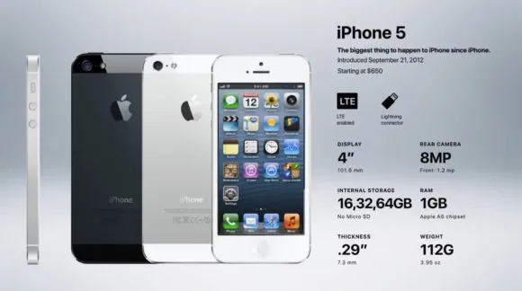

Generation 6: iPhone 5
iPhone 5 Release Date: September 21, 2012
The iPhone 5 was released in 2012, a year after the iPhone 4S. It was a major update to the iPhone, with a new design, a larger screen, and faster processor. One of the most significant changes with the iPhone 5 was the addition of LTE support. LTE is a new cellular technology that offers much faster speeds than previous cellular technologies. This made the iPhone 5 the first iPhone that could take advantage of the ultra-fast LTE networks that were being offered by AT&T and Verizon at the time. The iPhone 5 also had a new design with a taller, thinner body. The screen was also larger, at 4 inches, and it had a higher resolution. The processor was also faster, and the phone had more memory. The iPhone 5 was a major upgrade to the iPhone, and it helped to keep the iPhone at the forefront of the smartphone market.
Specification
- An 8-megapixel camera capable of recording in 1080p (camera stayed the same, but video quality was upgraded from 720p)
- A 1.2-megapixel front-facing camera (previous only VGA-quality, which is around 0.3 megapixels)
- An Apple A6, 32-bit, dual-core processor capable of speeds up to 1.3 GHz and 1GB of RAM (up from 1GHz and 512MB RAM)
- LTE capability (first iPhone to have this)
- iOS 6
- 8 hours talk time on 3G (no change)
- 8 hours of web browsing time on 3G (up from 6)
- 8 hours of web browsing time on LTE
- 10 hours of battery life on WiFi (restored to iPhone 4 levels)
- 10 hours of battery life for videos (no change)
- 40 hours of battery life for just music (up from 30)
iPhone 5 Countries and Carriers
The iPhone 5 was a huge success, with over 5 million units sold in its first weekend. However, some investors were disappointed with the sales figures, as they had expected even higher numbers. The phone was available in a few countries at first, but by the end of the year, it was available in over 100 countries around the world.